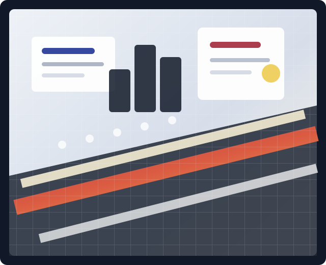
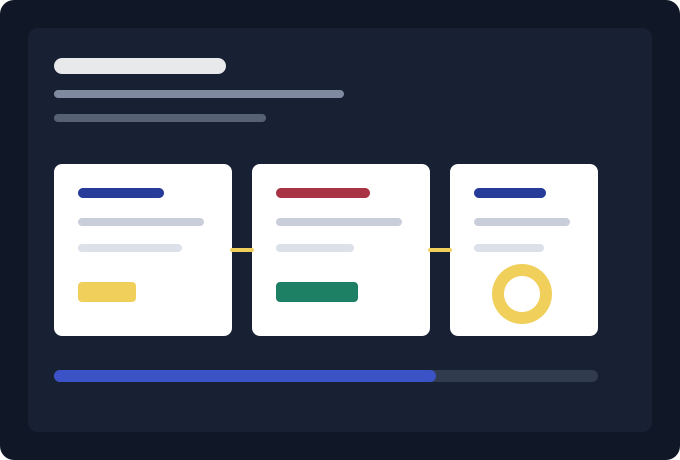

Capture requests once
Normalize every intake path into one queue with owners, due dates, and business context.

Research brief
A practical look at the signals, systems, and repeatable workflows that help teams move faster without losing visibility.
"The strongest teams are not adding more dashboards. They are connecting the work people already do."
Operations benchmark, 2026Signal map
Bring inbound asks, research tasks, and delivery updates into one structured view so every stakeholder can see what is moving and what needs attention.
What changes
The Figma reference uses crisp editorial blocks and compact insight cards. This section keeps that same scannable rhythm across all screen sizes.
Normalize every intake path into one queue with owners, due dates, and business context.
Attach source notes, summaries, and decisions to the same work item that triggered them.
Convert status changes into readable summaries that leaders can scan without a meeting.
Make blockers, dependencies, and next actions obvious before they become delays.
Use lightweight rules for routing, reminders, and weekly recaps while people focus on judgment.
Give reviewers the evidence, approvals, and history they need to move confidently.
Workflow
The layout pairs concise editorial copy with a visual product panel, matching the design's alternating content rhythm while staying fully responsive.

Latest reports
Hover or focus any report image to open a zoomed preview. Use the arrow controls to move through the carousel.
Case study
Teams can keep the same source of truth while giving leaders, contributors, and customers the level of detail they need.
Resources
Map every request path and identify where context gets lost.
View worksheetSummarize progress, blockers, and decisions for fast review.
View templateDefine ownership, escalation, and approval rules for recurring work.
View checklistGet the brief
Share a few details and receive the benchmark pack with example operating dashboards, request fields, and reporting prompts.